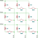
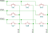

GPIO 键盘矩阵
gpio-kbd-matrix 驱动支持多种键盘矩阵硬件配置，并提供许多选项来调整其行为。本文概述一些常见的硬件配置，以及驱动如何支持它们。
以下所有配置的惯例是：驱动从行 GPIO（输入）读取，并通过列 GPIO（输出）进行选择。
基本用例：无隔离二极管，GPIO 支持中断
这是消费级键盘上的常见配置，使用薄膜开关和柔性电路板，没有隔离二极管，需要鬼键（ghosting）检测（默认已启用）。

系统必须支持 GPIO 中断，并且能够同时在所有行 GPIO 上启用中断。
kbd-matrix {
compatible = "gpio-kbd-matrix";
row-gpios = <&gpio0 0 (GPIO_PULL_UP | GPIO_ACTIVE_LOW)>,
<&gpio0 1 (GPIO_PULL_UP | GPIO_ACTIVE_LOW)>,
<&gpio0 2 (GPIO_PULL_UP | GPIO_ACTIVE_LOW)>;
col-gpios = <&gpio0 3 GPIO_ACTIVE_LOW>,
<&gpio0 4 GPIO_ACTIVE_LOW>,
<&gpio0 5 GPIO_ACTIVE_LOW>;
};
在此配置下，所有按键释放后，矩阵扫描库进入空闲模式，键盘矩阵线程只有在有按键被按下时才会唤醒。
当前未被选中的列所对应的 GPIO 被配置为高阻模式。这意味着行状态可能需要一段时间才能稳定，以免在从一列切换到下一列时误读按键状态。可以通过修改 settle-time-us 属性来调整稳定时间。
隔离二极管
如果矩阵的每个按键都有隔离二极管，则可以：
禁用鬼键检测，从而可以检测任意按键组合
将驱动配置为把未选中列的 GPIO 驱动到非活动状态而不是高阻态，这样可以缩短稳定时间（可能缩短到 0），并使用效率更高的整端口 GPIO 读取 API（如果 GPIO 引脚是连续的，会自动使用）
二极管方向从行到列的矩阵，必须在行上使用上拉，并使用低电平有效的列。


kbd-matrix {
compatible = "gpio-kbd-matrix";
row-gpios = <&gpio0 0 (GPIO_PULL_UP | GPIO_ACTIVE_LOW)>,
<&gpio0 1 (GPIO_PULL_UP | GPIO_ACTIVE_LOW)>,
<&gpio0 2 (GPIO_PULL_UP | GPIO_ACTIVE_LOW)>;
col-gpios = <&gpio0 3 GPIO_ACTIVE_LOW>,
<&gpio0 4 GPIO_ACTIVE_LOW>,
<&gpio0 5 GPIO_ACTIVE_LOW>;
col-drive-inactive;
settle-time-us = <0>;
no-ghostkey-check;
};
二极管方向从列到行的矩阵，必须在行上使用下拉，并使用高电平有效的列。

kbd-matrix {
compatible = "gpio-kbd-matrix";
row-gpios = <&gpio0 0 (GPIO_PULL_DOWN | GPIO_ACTIVE_HIGH)>,
<&gpio0 1 (GPIO_PULL_DOWN | GPIO_ACTIVE_HIGH)>,
<&gpio0 2 (GPIO_PULL_DOWN | GPIO_ACTIVE_HIGH)>;
col-gpios = <&gpio0 3 GPIO_ACTIVE_HIGH>,
<&gpio0 4 GPIO_ACTIVE_HIGH>,
<&gpio0 5 GPIO_ACTIVE_HIGH>;
col-drive-inactive;
settle-time-us = <0>;
no-ghostkey-check;
};
不支持中断的 GPIO
有些 GPIO 控制器在 GPIO 中断方面有限制，可能不支持同时在所有行 GPIO 上启用中断。
这种情况下，可以将驱动配置为完全不使用中断，而是在空闲时选中所有列并持续轮询行 GPIO；如果引脚是连续的，这只需一次 GPIO API 操作。
将 idle-mode 属性设置为 poll 即可启用此配置：
kbd-matrix {
compatible = "gpio-kbd-matrix";
...
idle-mode = "poll";
};
GPIO 多路复用器
在更极端的情况下，例如列使用了多路复用器、无法同时选中所有列时，可以将驱动配置为持续扫描。
为此，将 idle-mode 设置为 scan，并将 poll-timeout-ms 设置为 0。
kbd-matrix {
compatible = "gpio-kbd-matrix";
...
poll-timeout-ms = <0>;
idle-mode = "scan";
};
行和列 GPIO 的选择
如果行 GPIO 是连续的且位于同一个 GPIO 控制器上，驱动会自动切换 API，从整个 GPIO 端口读取，而不是逐个引脚读取。当 GPIO 不是内存映射的时候（例如位于 I2C 或 SPI 端口扩展器上），这一点特别有用，因为它能大幅减少相应总线上的传输次数。
列 GPIO 同样如此，但前提是矩阵配置了 col-drive-inactive，因此只适用于带有隔离二极管的矩阵。
16 位行支持
驱动默认使用 8 位数据类型存储行状态，这将矩阵的行数限制为 8。启用 CONFIG_INPUT_KBD_MATRIX_16_BIT_ROW 选项可将其增加到 16。
实际按键掩码配置
如果按键矩阵不完整，可以使用 actual-key-mask 属性指定实际存在的按键映射。这样可以在鬼键检测之前过滤矩阵状态，去掉不存在的按键，从而有可能允许原本会被鬼键检测阻止的按键组合。
例如，对于一个缺少一个按键的 3x3 矩阵：


kbd-matrix {
compatible = "gpio-kbd-matrix";
...
actual-key-mask = <0x07 0x05 0x07>;
};
例如，这样就可以检测到同时按下 Sw1、SW2 和 SW4，而不会触发防鬼键机制。
启用 CONFIG_INPUT_KBD_ACTUAL_KEY_MASK_DYNAMIC 后，可以使用 input_kbd_matrix_actual_key_mask_set() API 在运行时更改实际按键掩码。
键位映射配置
键盘矩阵设备会上报一系列 x/y/touch 事件。可以使用 input-keymap 驱动将它们映射为普通按键事件。
例如，下面的配置设置了一个 keymap 设备，它以 x/y/touch 事件作为输入，并输出相应的按键事件：
kbd {
...
keymap {
compatible = "input-keymap";
keymap = <
MATRIX_KEY(0, 0, INPUT_KEY_1)
MATRIX_KEY(0, 1, INPUT_KEY_2)
MATRIX_KEY(0, 2, INPUT_KEY_3)
MATRIX_KEY(1, 0, INPUT_KEY_4)
MATRIX_KEY(1, 1, INPUT_KEY_5)
MATRIX_KEY(1, 2, INPUT_KEY_6)
MATRIX_KEY(2, 0, INPUT_KEY_7)
MATRIX_KEY(2, 1, INPUT_KEY_8)
MATRIX_KEY(2, 2, INPUT_KEY_9)
>;
row-size = <3>;
col-size = <3>;
};
};
- input_keymap
键盘矩阵 shell 命令
shell 命令 kbd_matrix_state_dump 可用于测试任何使用键盘矩阵库实现的键盘矩阵驱动的功能。启用该命令后，每当矩阵状态变化时都会记录其状态；禁用后，会打印所有已检测到的按键的或掩码，可用于设置 actual-key-mask 属性。
可以通过 CONFIG_INPUT_SHELL_KBD_MATRIX_STATE 启用该命令。
用法示例：
uart:~$ device list
devices:
- kbd-matrix (READY)
uart:~$ input kbd_matrix_state_dump kbd-matrix
Keyboard state logging enabled for kbd-matrix
[00:01:41.678,466] <inf> input: kbd-matrix state [01 -- -- --] (1)
[00:01:41.784,912] <inf> input: kbd-matrix state [-- -- -- --] (0)
...
press more buttons
...
uart:~$ input kbd_matrix_state_dump off
Keyboard state logging disabled
[00:01:47.967,651] <inf> input: kbd-matrix key-mask [07 05 07 --] (8)
键盘矩阵库
GPIO 键盘矩阵驱动基于一个通用的键盘矩阵库，该库实现了扫描延迟、消抖、空闲模式等核心功能，可复用于实现其他键盘矩阵驱动（可能是应用程序特定的驱动）。
- input_kbd_matrix